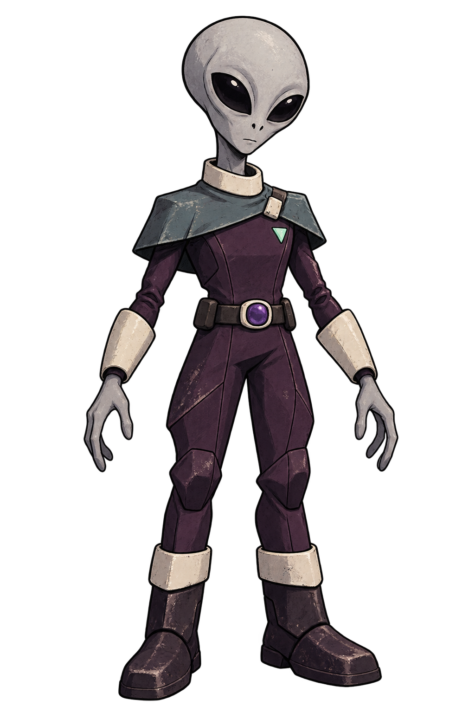

VEY · SURFACE & MOTION STUDY 03
Clean paint.
Grounded motion.
Vey’s reconstructed surface cleaned and repainted, with a 4K atlas, closed boot soles and corrected foot deformation. Compare the previous version under the same camera and lighting.

Loading the candidate…
What to judge
Orbit the back and both hands, switch to Paint only to separate texture from lighting, and scrub a full cycle while focused on the boots. Compare the old version without changing the view. The face and material placement still need your visual approval.
Time, accounted for.
Setup is a one-time cost. Execution, failures and corrections are retained. Parallel setup steps overlap; adding their durations would overstate total wall time.
| Step | Time | Result |
|---|
A reusable local route.
Modly’s open-source Trellis.2 GGUF extension reconstructs shape, then generates UV textures from the image and mesh. This is a local engine comparison, not Tripo’s proprietary P2.0 model.
The surface repair preserves the character silhouette while removing inconsistent face orientation and closing hollow soles. New UVs carry the paint, and the existing rig is transferred to the cleaned mesh. This Vey refinement replaces the patchy hue-based correction with explicit material regions, bounded surface pigment and painted seams. The boot soles follow the foot, with a blended ankle and floor clearance measured from the actual deformed mesh. The fitted recipe can be replayed in the Vey review project in Asset Studio; it is not a generic classifier for other characters. The studio records timings and checks the exact asset bytes. Broken outputs cannot proceed; passing checks still leaves visual approval to you. The original route remains available.
The studio link works on this computer while its local server is running. Motion is adapted from CMU takes 07_01 and 09_01 (source and credit; NSF EIA-0196217). Rigging and animation require their own review; a successful reconstruction does not approve them.